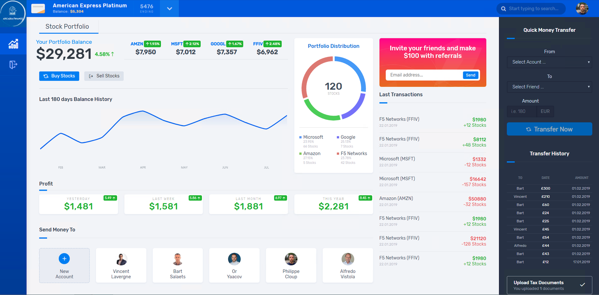

Step 2 - Publish Arcadia app with a NGINX Plus Ingress Controller¶
It’s time to publish Arcadia application externally from the Kubernetes cluster.
Deploy the NGINX Plus Ingress Controller
Now, Arcadia App is running in the Kubernetes Cluster. We need a solution to publish it externally (using Kubernetes front end IP addresses) and routing the packets to the right pods (main, back, app2, app3)
To do so, I prepared a kubectl Kubernetes Deployment in YAML.
Steps:
- SSH (not WebSSH) to CICD server
- Run this command
kubectl apply -f /home/ubuntu/k8s_ingress/full_ingress_arcadia.yaml- You should now see a new namespace and a new ingress in the Kubernetes Dashboard on the Jumphost
- Check the Ingress
arcadia-ingressby clicking on the 3 dots on the right andedit- Scroll down and check the specs

spec:
rules:
- host: k8s.arcadia-finance.io
http:
paths:
- path: /
pathType: ImplementationSpecific
backend:
serviceName: main
servicePort: 80
- path: /files
pathType: ImplementationSpecific
backend:
serviceName: backend
servicePort: 80
- path: /api
pathType: ImplementationSpecific
backend:
serviceName: app2
servicePort: 80
- path: /app3
pathType: ImplementationSpecific
backend:
serviceName: app3
servicePort: 80
Note
You can see the Ingress is routing the packets to the right service based on the URI.
Note
Now, Arcadia is available for customers.
Steps:

- In Chrome, click on the bookmark
Arcadia k8s- Click on
Login- Login with
matt:ilovef5- You should see all the apps running (main, back, app2 and app3)